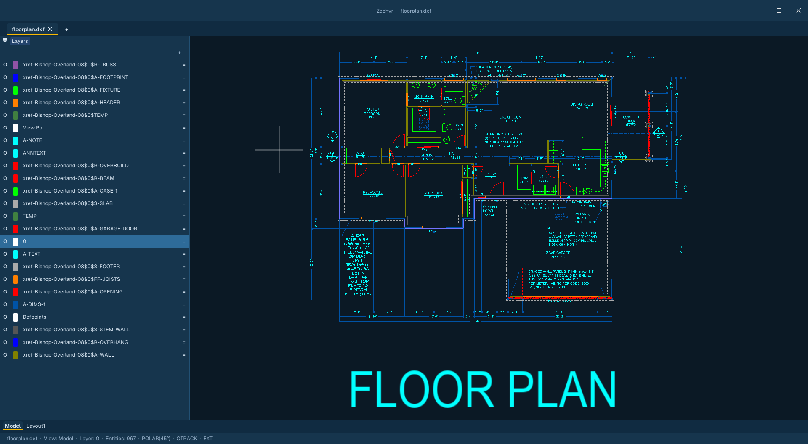
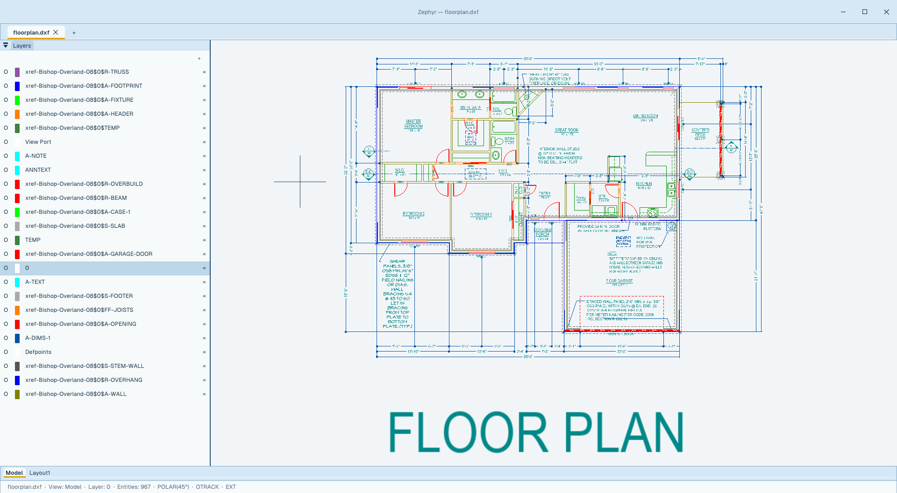

Native 2D CAD.
Mac. Windows. Linux.
Free.
Zephyr is a GPU‑accelerated drafting app written from scratch in Swift. Metal on macOS, Direct3D 12 on Windows, Vulkan on Linux. Read/Write DWG. Costs nothing.


Own nothing and be happy?
Break free from constant price hikes.
If you look at the subscription costs for AutoCAD LT, it's $540 a year if you pay upfront, or a massive markup to $840 a year if you have to pay monthly. They use aggressive marketing to lock you into 3-year commitments just to avoid price hikes, and the second you stop paying, you own absolutely nothing.
On top of that, finding great cross-platform tools that treat macOS and Linux as first-class citizens is a nightmare. Most polished solutions are strictly Windows-only. For example, while Autodesk finally added AutoLISP support to AutoCAD LT on Windows recently (2024), their official documentation explicitly states that AutoLISP is completely blocked on AutoCAD LT for Mac. If you're on a Mac and need LISP automation, they force you to step up to the full AutoCAD license at over $2,000 a year.
Note: We highly encourage looking at other excellent free open-source software like QCAD, LibreCAD, FreeCAD, SolveSpace, and Open 2D Studio as powerful options to try in your drafting workflows. Zephyr exists alongside these community solutions as a performance-oriented alternative, utilizing Direct3D 12 on Windows, Metal on macOS, and Vulkan on Linux through a single Swift GPU pipeline to feel native on all three.
The dirty‑DXF janitor you've always wanted.
Scanned a paper drawing? Imported a forty‑year‑old DXF? You know the speckles — tiny stray dots and dashes scattered through the geometry.
Point Zephyr at one. It learns the color and size signature, finds every match across the drawing, and lets you erase them in one motion. No regex. No script. No half‑day cleanup.
Opens the files everyone else hands you.
DWG and DXF — round‑trip ready, including blocks, layers, hatches, splines/NURBS, polylines with bulge, and external references. PDF export ships a Bluebeam‑compatible Measurement dictionary so dimensions survive the handoff.
Reference it. Don't copy it.
Attach drawings, images, and PDFs as live references with ATTACH. Your host file stores paths only; referenced geometry renders from a runtime copy that never bakes into saves or undo. Edit the source and the palette flags it for reload.
Deleting a placement leaves the reference listed as Unreferenced — same as AutoCAD. Detach removes it for good; Bind (or Embed for media) makes it permanent.
Loading is asynchronous and capped (32 drawing xrefs, depth 16, 5M primitives per tab) so a heavy reference set can't stall the canvas. Paths save relative by default (REFPATHTYPE), dependent layers arrive as Xref|Layer under VISRETAIN, and XDWGFADECTL dims reference geometry so your own linework stays readable. Clips write back as standard SPATIAL_FILTER objects.
Same file. Two apps.
One actually opens it.
Same DXF — 186‑841 — Pirate Ship.dxf, a 3,734‑entity drawing from KOMPAN's public library. Same machine. Same operation: File → Open → Fit to view.
Classic shortcuts. Modern interface.
Every command you muscle‑memorized in AutoCAD still works — L, PL, C, REC, M, O, TR, J. New tools you'll wish you'd had.
Arrange drawings around the job, not the other way around.
Put a reference drawing on a second monitor, compare two jobs side by side, or keep Model and a paper layout visible in two panes of the same main window. Zephyr stays one editing session with exactly one active drawing—and, in a split, one focused pane.
Three everyday arrangements
How this maps to AutoCAD
SAME NAMES, DOCUMENTED DIFFERENCESSplit layouts belong to the main window. Floated drawings are not split further, and split/float arrangements are session state rather than named configurations.
AutoLISP that runs everywhere. Yes, even on Mac.
A native AutoLISP engine with the full inventoried builtin set — verified against every documented example. Routines written for full AutoCAD run unmodified: entity creation and editing, selection sets, system variables, file I/O, dictionaries, layer states, and scripted (command …) calls.
Identical behavior on macOS, Windows, and Linux — the platform AutoCAD LT blocks LISP on is a first-class citizen here. Unsupported Tier‑2 calls report clean errors instead of failing silently.
You don't need a subscription. You don't need to compromise.
Honest table. We're not the right tool for every job — but for 2D drafting, here's the actual delta.
Open source. Always.
Zephyr is GPL v3. Free to use, free to fork, free to ship inside your shop. Paid support (priority bug fixes, technical help) comes later — the app itself never costs money.
Stop renting your CAD.
Free download. No account, no telemetry, no email gate. The .dxf files you author inside your open-source tools will open here perfectly.
sudo snap install --dangerous <file>.snap